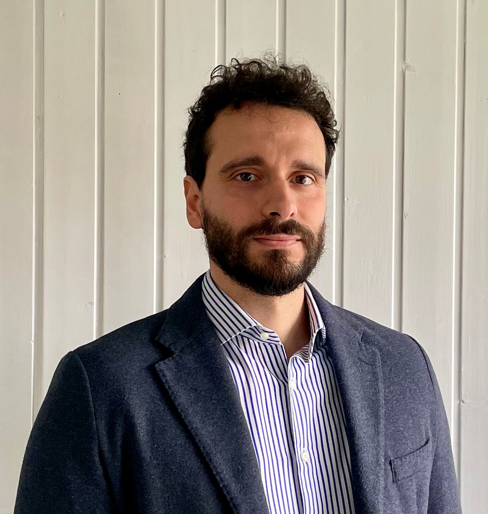

Political economist · Researcher
Federico Maggio
I study how institutions, conflict and economic opportunity shape migration, health and human development.
I am a Postdoctoral Researcher at the Department of Economics and Management of the Free University of Bozen–Bolzano.
I am also an IZA Research Affiliate and a GLO Affiliate.
My research interests are in Political Economy, Development Economics and Labor Economics.
Upcoming presentation
18 May 2027
Political Economy WIP Seminar · Università Cattolica, Milan

Contact
Let’s talk research.
For research, seminars and academic collaboration, the best way to reach me is by email.
federico.maggio@unibz.it
Piazza Università, 1
39100 Bolzano, Italy
39100 Bolzano, Italy